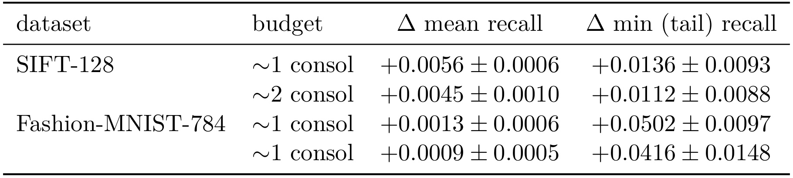
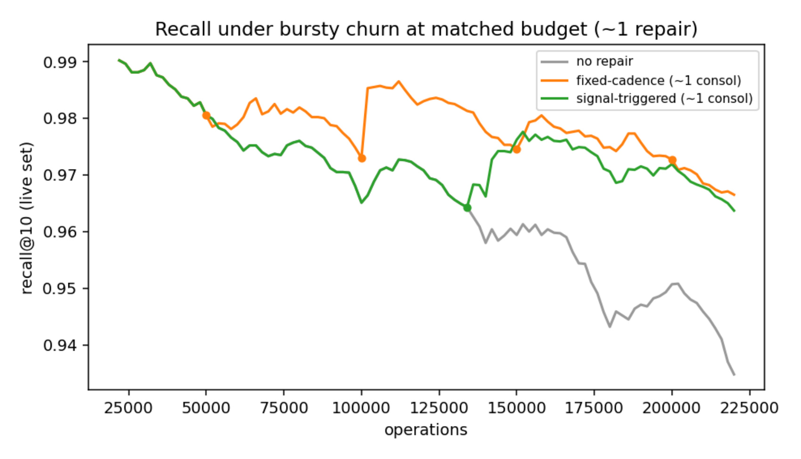
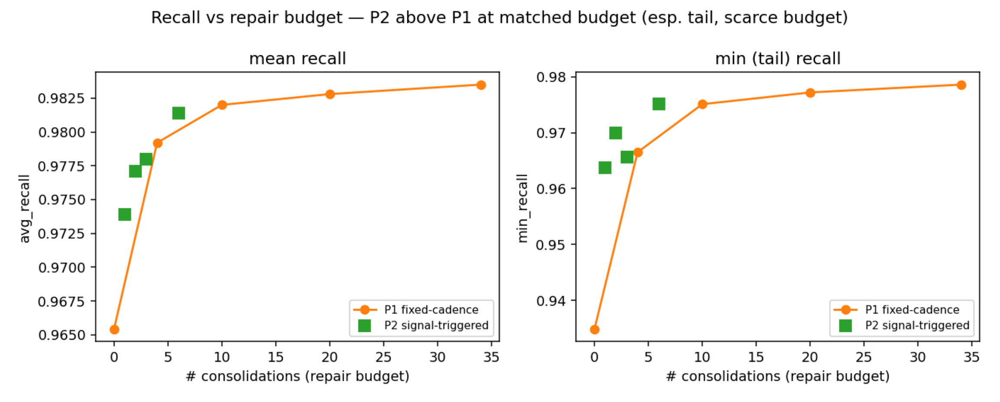
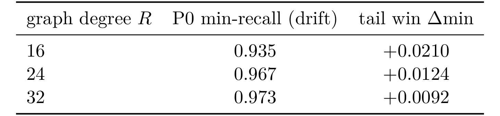
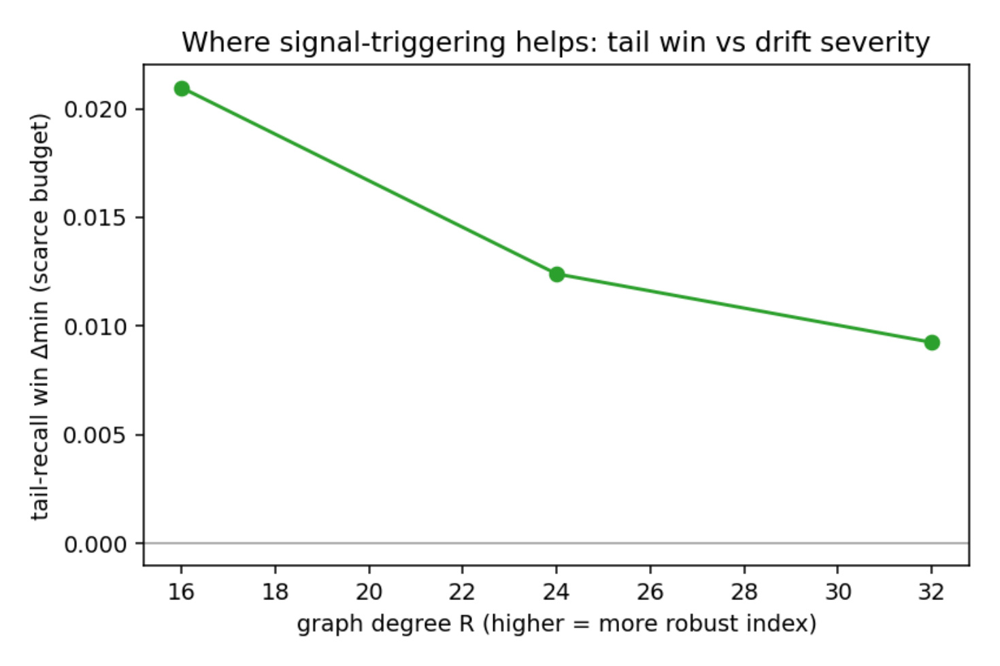

多校-ANNRepair
这篇论文讨论的是图 ANN 索引在高频插入、删除流量下的维护策略，论文标题为 When to Repair a Graph ANN Index: Navigability-Signal-Triggered Local Repair Protects Tail Recall Under Bursty Churn。作者 Madhulatha Mandarapu 和 Sandeep Kunkunuru 来自 VaidhyaMegha Private Limited, India，论文入口为 arXiv:2607.00728。arXiv 元信息给出了可复现实验仓库，本轮已核验项目页可访问：samyama-ai/updatable-graph-index。它不是提出一个全新向量索引，而是在 HNSW、DiskANN/Vamana 这类可导航图索引之上问一个更窄的问题：删除和插入突发出现时，修复预算应该按时钟花，还是按可导航性退化信号花。
Graph ANN 索引在插入和删除频繁交替时会丢失召回，因为删除节点会切断原本依赖它的贪心搜索路径；而生产系统常按固定周期修复，未必在真正退化的窗口花预算。本文要验证的是：能否用可导航性退化信号触发局部修复，在相同修复次数下更好保护最差窗口的 tail recall。
[toc]
1. 背景和问题
图 ANN 索引的核心假设是“图足够可导航”。无论是 HNSW 还是 DiskANN/Vamana，查询都不是枚举所有点，而是从入口点开始沿着邻接边做贪心 best-first walk，用局部邻居关系逼近真实最近邻。只要图的近邻结构稳定，这种方式可以用很少访问量拿到很高 recall；一旦图的可达路径被破坏，搜索会被困在不再通向目标区域的局部区域，召回下降就不是均匀发生的，而会集中出现在某些窗口、某些查询和某些尾部状态上。论文选择这个问题，是因为现代召回基础设施已经很少面对静态库：新内容、新商品、新文档、新 embedding 持续写入，过期、违规或失效内容持续删除，索引维护已经成为服务质量的一部分。
删除是这里最麻烦的操作。插入新点通常可以把新节点连入图，虽然会带来分布漂移，但不一定立刻破坏已有搜索路径；删除则会把图中一个曾经承担“桥梁”作用的节点标成 tombstone，查询时把它从结果中过滤掉。如果系统只是 lazy deletion，物理图结构还保留很多失效节点，搜索路径可能仍然会经过它们，最后发现候选不可返回，或者更糟的是原本通过该节点通向某个区域的路线被削弱。论文在 Introduction 里把这种现象说成 deletions orphan greedy-search paths：不是单个向量没了这么简单，而是通向许多邻域的路标被拿走了。
生产系统通常用固定周期做 consolidation。比如删表达到某个阈值、每经过若干操作、或者“删除比例到 X%”时跑一次批量清理，把 tombstoned nodes 物理移除，并在受影响邻域做局部 edge repair。这个策略的优点是简单、可排期、易于估算资源；缺点也很明显：它不看图是否真的在退化。如果 bursty churn 正好发生在两次固定修复之间，tail recall 可能已经跌到服务不可接受区间；如果一段时间 churn 不强，固定修复又可能把预算花在收益很小的位置。
论文的价值在于把这个问题收缩成“when to repair”。它不声称设计了一个新的图索引，也不试图替代 FreshDiskANN、Vamana 或其他动态图更新机制；它只比较同一种局部修复动作在不同触发时机下的效果。这样做有两个好处。第一，结论直接面向工程控制器：许多线上系统已经有某种 repair 或 rebuild 能力，只是不知道什么时候触发更合适。第二，评估可以把“花了多少修复预算”和“修复放在什么时候”拆开，避免一个策略因为多修了几次而看上去更好。
这也是为什么论文重点看 worst-case 或 min recall@10，而不是只看 mean recall。平均 recall 很容易被大多数平稳窗口稀释，尤其在 bursty stream 中，服务真正担心的是短时间内召回掉坑：用户请求、召回候选、RAG 检索或推荐前置召回都可能在某个窗口碰到严重退化。论文最后也很克制地承认，平均 recall 的收益没有达到预注册目标；它成立的主张是“稀缺修复预算下保护尾部召回”，不是“全局平均质量大幅提升”。这个边界很重要，因为它决定了这篇论文应该被看作索引维护控制策略，而不是一篇新 ANN 算法论文。
放到推荐和搜索链路里，这个问题还会被上游业务节奏放大。内容池常有批量下架、冷启动新内容批量进入、embedding 批量重算、离线审核结果集中生效等事件，更新流天然不是平滑泊松过程。固定 cadence 在这种场景下像一个后台保洁计划，能保证最终清理，却不保证在事故窗口前清理；信号触发则更像服务质量守门员，目标不是减少所有维护成本，而是在预算有限时把最容易伤害用户体验的短暂断崖先补上。
2. 方法
2.1 三类修复策略与同预算比较
论文在同一套索引和同一条 churn stream 上比较三类策略。P0 是 no repair，只做 lazy tombstoning，作为退化下界；P1 是 fixed-cadence，每隔固定操作数做一次 consolidation，代表常见的定时或定量清理策略；P2 是 signal-triggered，当可导航性信号低于修复后基线一定幅度时才触发 consolidation。三者的修复动作不是三种新算法，而是围绕同一类局部 repair 能力改变触发逻辑，因此读这篇论文时不要把 P2 理解成新的图构建器，而要理解成一个维修调度器。
这里的 consolidation 指的是对当前 tombstoned nodes 做物理清理，并在受影响邻域恢复连接。论文用 DiskANN/Vamana 的局部修复思路描述这个过程：删除节点的 in-neighbors 和 out-neighbors 之间需要重新建立合理候选边，再经过多样性 pruning，避免图局部变成拥挤或冗余连接。P2 的关键不在于修复动作更强，而在于它把有限修复次数挪到可导航性真正变差的窗口。如果修复动作本身不变，实验就可以把“同样花一次修复”放在公平轴上比较。
公平比较靠 matched-budget protocol。固定周期策略 P1 可以通过不同 cadence 形成 recall-versus-consolidation-count 曲线，P2 在每条流上实际触发若干次 consolidation。论文不是拿 P2 的结果直接和某个固定 cadence 比，而是在 P1 曲线上按 P2 的 consolidation count 插值，读出相同修复次数下 P1 的 recall，再计算 P2 minus P1 的差值。这个处理避免了一个常见陷阱：信号触发策略如果只是更频繁修复，当然可能 recall 更高，但那不说明时机更好。
2.2 可导航性信号和触发阈值
P2 使用的信号是 probe recall，也就是在一个小的、held-out 的 probe query set 上周期性计算 recall@10。这个 probe set 和最终评估 query set 分开，因此它不是直接偷看评估集；同时它是黑盒信号，不需要索引引擎暴露内部图结构、路径单调性或连通性计数。控制器记录一次修复后的 probe recall 作为 baseline，后续窗口看到 $s(t)$ 相对 baseline 下降超过阈值 $\delta$，就触发 local consolidation。这里的 $s(t)$ 和 $\delta$ 是运行量和阈值，不是可复用模型公式。
本文没有可复用的核心公式。论文没有给出新的损失函数、图优化目标或可直接迁移的推导式；它的“数学对象”主要是 repair policies、recall@10、min recall、consolidation count、95% confidence interval 和 Spearman $\rho$ 这些评估量。方法部分真正需要复用的是控制逻辑：用小规模 probe recall 近似全量真实 recall 的退化方向，用阈值决定何时花 repair budget，然后用同预算曲线判断触发时机是否更优。
这个设计最值得注意的是 probe recall 的时间属性。论文不只报告并发相关性，还报告 one-window lead 的 Spearman 相关，二者都约为 0.95，高于作者预先设定的 0.6 bar。这意味着 probe signal 不是事后解释变量，而可以作为提前一窗口的触发依据。对线上系统来说，信号如果只能事后解释就只能用于告警；如果能在下一轮服务质量继续下滑前触发 repair，才有机会保护尾部窗口。
2.3 局部 consolidation 的作用边界
论文的局部修复模型建立在一个约束上：它研究的是 single-node in-memory Vamana，L2 数据，10k 到 20k live set 的主实验，以及一个 100k live set 的扩展检查。也就是说，P2 的控制器不是直接覆盖多分片、多租户、异构 embedding 分布或磁盘冷热分层的完整生产系统。它更像一个最小可复现实验：先证明同样的 local repair 能力，如果由导航性信号触发，在某些脆弱图和稀缺预算状态下可以更好地保护 min recall。
局部修复的边界还体现在删除和插入的差别上。论文的 churn stream 有 delete-heavy bursts 和 insert-heavy calm，目的是制造非平滑漂移。删除重的 burst 更容易让图的可导航路径突然断裂，信号触发策略就应该在 burst 起点附近更敏感；插入主导或静态无 churn 的流则不应频繁触发。作者做了几个 sanity controls：静态流几乎没有 drift 且 P2 不触发；insert-only 漂移弱于 delete-heavy；如果 P2 只是花更多预算则不合格；exact live-set recall oracle 会跟新建静态索引对齐。这些控制让方法主张更像“何时修”而不是“实验设置偶然偏向 P2”。
需要保留的风险是：P2 的有效性依赖 probe query set 能代表服务质量退化，且 repair 本身足够便宜、足够局部。如果线上 query 分布突然变了，或者图内部退化不被 probe set 捕捉，阈值控制器可能延迟触发；如果 repair 的固定开销很高，频繁监听和临界触发也可能带来调度抖动。所以这篇论文最适合作为控制器原型，而不是直接把某个阈值搬进线上。

这张表在站点版方法段中作为策略定义的视觉锚点：P0、P1、P2 三种索引维护方式使用相同修复预算，但触发机制从固定 cadence 转为可导航性信号。先看这个表，可以把后续实验中的 tail recall 差异读成方法选择带来的预算分配差异，而不是把 P2 误解为额外使用更多维护资源。
3. 实验结果
3.1 同预算下，收益集中在 tail recall
实验使用 DiskANN 的 in-memory Vamana index，通过 diskannpy 单线程构建以提升确定性。两个主数据集是 SIFT-128 和 Fashion-MNIST-784，均来自 ann-benchmarks，距离度量为 L2，live set 规模分别是 20k 和 10k，stream 大致包含 10 倍 turnover。评价不是拿初始 ground truth 做静态比较，而是在每个窗口上根据当前 live set 重新计算 exact brute-force oracle；这点很重要，因为如果被删除的数据还留在 ground truth 里，所谓 drift 会被人为放大。每个设置跑四个 stream seeds，并用 recall@10 的 mean 和 min 两类统计看结果。
表 1 是整篇论文最重要的数字证据。它报告的是 P2 signal-triggered repair 减去 P1 fixed-cadence repair，在同等 consolidation count 下的差值，所以正数才表示 P2 在相同修复次数下更好。SIFT-128 在约一次 consolidation 的预算下，mean recall 提升 +0.0056，min tail recall 提升 +0.0136；约两次 consolidation 时，mean 提升 +0.0045，tail 提升 +0.0112。Fashion-MNIST-784 的 mean gain 更小，约 +0.0013 和 +0.0009，但 tail recall 的提升达到 +0.0502 和 +0.0416。这个对比说明论文主张不能写成“平均召回显著变好”，因为平均收益很小；更准确的读法是，在 sparse 或更脆弱图上，信号触发把最差窗口从低谷里拉回来，tail gain 远大于 mean gain。95% t-CI 覆盖四个 seeds，tail delta 的置信区间排除零，也让这个结论比单次曲线更可靠。

图 1 解释了表 1 背后的时间机制。灰线 no repair 持续下跌，说明 lazy tombstoning 不修复会让图越来越不可导航；橙线 fixed-cadence 在固定点 consolidation，某些区间会恢复，但在 burst 到来和下一次固定修复之间仍会出现明显 crater；绿线 signal-triggered 的修复点更贴近 recall 下滑窗口，因此最差点被抬高。注意图中 green 并不是全程都比 orange 高，后段二者也会接近甚至交叉，所以它不是“任何时刻都最优”的证据。它证明的是在大约一次修复预算下，触发时机改变了最差窗口的位置和深度。对于召回系统，这比单看最终窗口 recall 更有意义，因为线上 SLA 往往被短暂低谷触发，而不是被全天平均值触发。
3.2 repair budget 曲线说明收益不是无限放大
论文还画了 recall versus repair budget，用来避免只看一个预算点造成误读。固定周期修复随着 consolidation count 增加会单调改善，这符合直觉：修得越频繁，tombstone 和断边积累越少；P2 的绿点在相同预算附近通常位于 P1 曲线之上，但这个差距在 mean recall 上不大，在 tail/min recall 上更明显，尤其是低预算区。换句话说，信号触发策略最有价值的区域不是预算充足、可以高频修复的时候，而是“只能修一两次，但必须修在最危险窗口”的时候。

图 2 左右两栏的差异值得细读。左栏 mean recall 中，P2 的绿点比 P1 曲线高一些，但整体量级很小；右栏 min tail recall 中，低 budget 处的绿点相对 orange curve 更有解释力，说明同样修复次数如果落在更合适的时刻，最差窗口可以被抬高。随着 budget 增加，P1 固定修复也足够密集，P2 的机会空间变小，差距自然收敛。这也解释了论文的 honest negative：预注册的 mean recall gain 目标是大于等于 0.02，但实际 mean gain 小于 0.005。作者没有把这个失败包装成成功，而是把 claim 收缩到 service-level tail recall，这一点反而提高了实验可信度。
3.3 漂移严重度决定 P2 是否值得用
为了找出 P2 的适用边界，论文扫了 graph degree R。R 越低，图越稀疏，路径冗余越少，删除节点更容易切断可导航路线；R 越高，图越鲁棒，固定周期的劣势会变小。这个实验比简单调 delete fraction 更稳，因为作者发现 burst generator 会覆盖 delete fraction 设置，导致原先的 delete-fraction sweep 产生相同流，所以这些无效运行被丢弃，改用 R 来调漂移严重度。

表 2 给出三个 R 值下的稀缺预算结果。R=16 时，不修复的 P0 min recall 只有 0.935，P2 的 tail win 是 +0.0210；R=24 时，P0 min recall 升到 0.967，tail win 降为 +0.0124；R=32 时，P0 min recall 为 0.973，tail win 只剩 +0.0092。这个表的含义不是“R 越小越好”，而是告诉我们信号触发策略是在脆弱图上更有边际价值。一个已经非常稠密、路径冗余高的索引，即使按固定周期修，也不会给 tail recall 留下太深 crater，P2 的触发时机自然难以创造大差距。
这组数字也给阈值策略提供了一个实用诊断：上线前应先估计索引本身的脆弱度，而不是直接选择 P2。若低 R 或高删除 burst 让 P0 很快掉到 0.94 附近，trigger controller 有空间提前修补；若 R=32 已经能把无修复 tail 维持在 0.973，P2 的收益会被路径冗余吃掉，运维复杂度可能不值得。

图 3 把表 2 的三个点画成趋势线，能更直观地看到 tail win 随 R 上升而衰减。横轴把 R=16、24、32 解释成“higher means more robust index”，纵轴是 scarce budget 下的 tail-recall win。绿色线从 0.021 左右降到 0.009 左右，说明 P2 不是一种不分条件的常开策略，而是一个针对 fragile graph plus scarce budget 的控制器。工程上这会影响上线策略：如果索引本身高 R、更新慢、修复预算足，固定 cadence 可能已经够用；如果索引低 R、删除 burst 明显、预算又紧，probe signal 才更值得成为 repair trigger。
论文还报告了两个补充点。第一，probe signal 对真实 full-eval recall 的 Spearman 相关约为 0.95，并且 one-window lead 也约为 0.95，这支撑了它作为 leading indicator 的身份。第二，在 SIFT 100k live set 的单 seed 扩展检查中，P2 在所有 operating points 上仍然优于固定周期，约一次 consolidation 下 min recall@10 的 tail win 为 +0.009。这个规模检查还不等于生产级结论，因为它仍是单节点 in-memory、单 seed、L2 数据；但它说明结果不是只在 10k 或 20k toy live set 上出现。
还有一个容易忽略的实验细节是 oracle 口径。论文每个窗口都按当前 live set 重算 exact recall，而不是沿用初始库的近邻答案；这避免了把“数据被合法删除后答案集合变化”误判成索引退化。对动态召回系统来说，先把评估答案口径做对，才谈得上比较 repair policy，否则任何删除都会让旧 ground truth 人为惩罚新索引状态，造成结论偏差。
4. 总结
4.1 我的判断
这篇论文的贡献很窄，但窄得有价值。它没有尝试证明一种新 ANN 图结构，也没有把平均 recall 的小收益夸大成系统性胜利，而是把维护策略中的“触发时机”从固定时钟换成了可导航性退化信号，并用 matched-budget protocol 把修复次数控制住。对搜索、推荐召回和 RAG 检索基础设施来说，这类工作比看上去更实用：很多服务已经有 rebuild、consolidate 或局部 repair 能力，真正缺的是把这些能力接到可靠信号上，并证明相同预算下能改善最坏窗口。
4.2 工程启发与复现建议
如果要复用这篇论文的思路，我会先做三件事。第一，在自己的索引服务里建立小而稳定的 probe query set，并明确它代表什么用户分布；没有这个前提，$s(t)$ 的下降可能只是 probe 偏差。第二，日志必须记录 consolidation count、清理 tombstone 数、wall-time 和每个窗口的 live-set recall proxy，否则无法区分“触发得更准”和“修得更多”。第三，评估要同时看 mean recall、min recall、低分位 recall 和 burst-window recall，不要只拿平均值做上线门槛。论文里最可借鉴的不是某个阈值，而是同预算曲线和 tail metric 的评估口径。
更具体地说，我不会直接把论文里的 probe recall 阈值照搬到线上，而会先把当前固定 cadence 策略离线 replay 成一条基准曲线：每个窗口记录删除量、插入量、tombstone 累积量、真实或近似 recall、修复耗时和候选集质量波动。然后在同一条日志上模拟 P2，只允许它使用过去窗口能看到的 probe signal，不能使用事后 full-eval recall。这样可以检验两个核心问题：第一，P2 是否真的在同样修复次数下减少最差窗口，而不是因为模拟偷偷多看了未来；第二，P2 的触发点是否集中在少数 burst 事件附近，而不是变成高频抖动。如果触发点分散、解释不了业务事件，就说明 probe set 或阈值还没有准备好。
我也会把这篇论文和常见的“定期重建索引”分开看。定期 rebuild 解决的是长期结构老化和数据分布漂移，成本高、周期长、通常不可频繁执行；local repair 解决的是删除节点附近的可导航性损伤，成本小但作用局部。ANNRepair 的信号触发更适合挂在后者上，而不是替代全量 rebuild。一个合理的维护体系可能是三层：轻量 probe signal 触发局部 consolidation，中等周期检查 tombstone 和路径质量触发更大范围修复，长周期或版本变更时再做全量重建。论文没有实现这三层，但它把第一层的评价方法讲清楚了。
4.3 局限与后续跟进
局限至少有四点。其一，主实验规模仍然偏小，100k live set 也只是单 seed 扩展检查，还不能替代亿级或十亿级向量服务的多分片评估。其二，论文使用的是 L2 数据和 in-memory Vamana，内积检索、多模态 embedding、过滤条件、磁盘索引和冷热分层都可能改变 repair 成本。其三，probe recall 依赖 held-out queries 的代表性，如果业务 query distribution 同时漂移，probe signal 和真实服务质量可能脱钩。其四，论文没有给出 recall-versus-repair-cost bound，也没有把数据分布漂移和图可导航性退化耦合成理论模型。
后续可以沿三条线跟进。第一，把同预算协议搬到更接近线上系统的 replay：真实 delete/insert 日志、过滤条件、分片迁移、后台 compact 资源竞争都应纳入。第二，比较 probe recall、图内部路径单调性、入度/出度异常、tombstone neighborhood size 等多种 trigger signal，看是否能降低误触发和漏触发。第三，把 repair scheduling 接进服务目标：不只优化 min recall@10，还要同时约束 P99 latency、后台 I/O、更新可见性延迟和恢复时间。只有这些约束都一起看，ANNRepair 才能从论文里的清晰控制器变成可上线的索引维护策略。